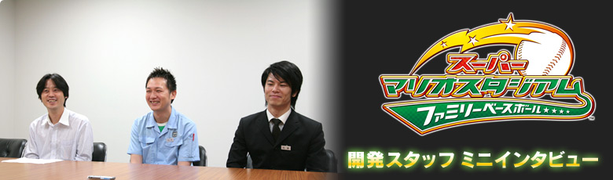
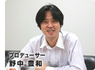
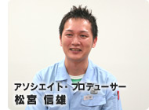
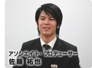
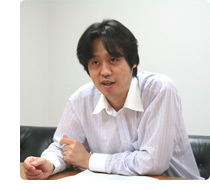
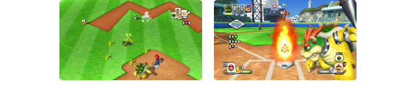
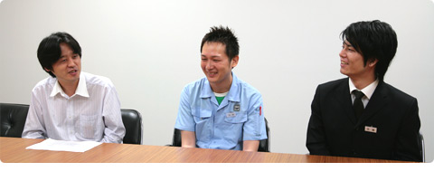

白熱の真剣試合に参加してくれた任天堂の開発スタッフに、『マリオスタジアム ファミリーベースボール』開発にまつわるお話を少しだけうかがいました。ゲームそして野球を通じての願いなどを教えてもらいました。
今の４人プレイ盛り上がりましたね。
Ｗｉｉで開発を始めるに当たって、Ｗｉｉというゲーム機の“リビングに置いてもらう”というコンセプトを意識しました。リビングのテレビで家族や友だちを呼んでワイワイするというような… ２人対２人だとか、４人対コンピュータ対戦とか１対１ではなく様々な対戦形式で遊ばせることをしたかったので４人対戦形式は必ず入れたかった仕様ですね。また多人数で遊んでもらう、ということから協力プレイやおじゃまアイテムなど楽しいアイデアもいろいろ出てきました。ただもちろん1人で遊んでもやり応えのあるゲーム作りにはしているつもりです。
多人数プレイのデバッグのプレイをする中で、４人対コンピュータとかで対戦するんですけど、すごく盛り上がりました。コンピュータの「さいきょうレベル」を選ぶと、本当に強いんですよ。ゲームの上手いスタッフでも４人の息を合わせないと、結構苦戦したりとか。
みんなで遊んでいると、１人がミスしたせいで次に続かなかったりして、本当に野球してる感覚になりますね。
そうですね。２人プレイでは、走塁の時なんかもランナー担当とおじゃまアイテム担当という分担ができるんですけど、協力している感じで盛り上がれますね。プレイヤー同士でもコミュニケーションが生まれるという部分が、楽しんでもらえるんじゃないかなと思います。
先ほどの試合でも、外野で息が合わなくて、本来だったら「なかよしジャンプ」でフライを捕れるところが捕れなかったことがありましたよね。逆に、息がバッチリ合うとホームランボールがばんばん捕れてしまうと。
なので、ゲーム中で「なかよしキャラ」というのもあるんですけど、実際のプレイヤーと仲良しかというのも重要かもしれないですね(笑)。
相手に遠慮をしてしまったりとか…。
逆に、どっちも『俺が俺が』みたいになったりとか(笑)。
Ｗｉｉではすでに『Wii Sports』が発売されており、この中にも「ベースボール」が入っていて、直感的な野球を楽しんでいただけると思います。この直感的な野球の部分は大事にしマリオの世界観を加えることで、上手くデフォルメした野球ゲームができないかということで作られました。
ですので、まずはマリオがいなくても、ゲームとして面白いものを目指しました。マリオが出ることで「ハチャメチャな野球ゲーム」と思われるかもしれませんが、実はそうではなくて、駆け引きだとか、野球ゲームとしての主の面白い部分は大事にしているんですね。そこにマリオの世界観が加わることによって、さらなる面白さを目指すという順序なんです。

今回のソフトは、バンダイナムコゲームスさんとのコラボレーションによって実現できました。野球ゲームとしての部分は、バンダイナムコゲームスさんは経験も豊富で、プロフェッショナルですから、従来いろいろな野球ゲームを遊ばれた方でも野球ゲームとして本格的に楽しめる内容になったと思っています。また一緒に制作を進めたナウプロダクションさんは前作※のときからのお付き合いがあり、こちらの考えを理解していただいていましたので安心してお任せすることができました。苦労はしましたがそれぞれの会社の持ち味が上手く生かされた形になったと思っています。
※『スーパーマリオスタジアム ミラクルベースボール』…2005年7月21日にニンテンドー ゲームキューブソフトとして発売。
「おじゃまアイテム」や「スペシャルボール」なども設定でオンオフができるので、それらをオフにしてしまえば、スタンダードな野球ゲームとしてもプレイできるんです。開発の最初の頃は、それほど各キャラの差もなかったりしたのですが、各キャラクターそれぞれの個性があって、初めてマリオの野球ゲームとしての面白さが出るだろうと考え、キャラクターの個性を豊かにしました。リアルな野球ゲームのバランスよりも、キャラクターの個性を出してもらう方を優先して調整しています。
さっきの試合でキノじいが出ましたけど、他にも、ゲッソーなんかは普通のキャラと違って、チェンジアップが速くて普通のボールが遅い。ワルイージはパワーを溜めると球が遅くなって、普通に投げると速いとか。そういう特殊な個性を持ったキャラクターもいます。

個性を重視してとは言いましたが、ゲームバランスが崩れるようなものではなくて、バランスも大事にしながら個性も大事にしてまとめています。自分の好きなキャラクターの集め方によっては、例えばパワー系だとか変化球チームだとかいった偏りになることはあるかもしれません。けれど、そういった多少の偏りも、マリオという世界観の中では逆に楽しく感じていただけるのでないかなと。かといってそれによって差がものすごく出るわけではないんですけど。
多人数プレイのほかにもチャレンジモードという、１人用の遊びも用意しています。こちらは前作よりもボリュームが増えています。ゲームを進めていくと、使えるキャラクターが増えたりとか、ミニゲームができるようになったりするのですが、そのモードをコンプリートしようとすると、かなり時間がかかるので、やり込みを望んでいる方にも楽しめると思います。ミニゲームのスコアアタックもなかなか熱いんですよね。スタッフの間でも「何点だった？」っていう話が飛び交ってて。そこは松宮が上手いんですけど(笑)。
どんなゲームでも、大体彼がトップなんですよね。
そんな点数出るんだ、とか言って(笑)。

僕は、さっきも言ったコンピュータの最強モードを４人で倒す、という遊び方がオススメですね。「ここでおじゃまアイテムを使ってコンピュータを足止めして」とか、みんなで考えて工夫しながらやると楽しいと思います。コンピュータのレベルも４段階から選べるようにもなっています。
では、読者の皆さんにメッセージをお願いします。
ミニゲームは得点が計測不可能になるくらいの点数を狙えるので、ぜひその得点を目指して頑張っていただきたいです。「バレルクラッシュ」という、樽を打球で壊すミニゲームがあるんですが、僕はそれで99,999点を達成しました。皆さんにもたくさんのミニゲームを楽しんでいただければと思います。
お父さんとお姉ちゃんとか、お母さんと息子さんとか、そういう組み合わせで野球をやることって現実でもないし、家族で野球ゲームをやることって、これまであまりなかったと思うんです。この『スーパーマリオスタジアム』だったら、リモコンを片手で振るだけでおじいちゃんでも小学生でも遊べます。４人まで一緒に遊ぶことができますので、ぜひ家族でプレイしていただきたいです。
これはゲームキューブの時からのコンセプトなんですが、最近広場で野球をする子供たちを見なくなりましたね。我々の子供時代というのは（と言うこと自体おじさんですね）、公園で野球をするというのが日課みたいな部分だったんですが、最近は子供さんが野球をあまり知らなかったりする。そういった中で、『スーパーマリオスタジアム』を通じて、野球の面白さや楽しさなどを知って、好きになってもらいたいな、というのがゲームに込めた願いです。これが野球を始めるきっかけになってくれれば嬉しいなと思います。
どうもありがとうございました！